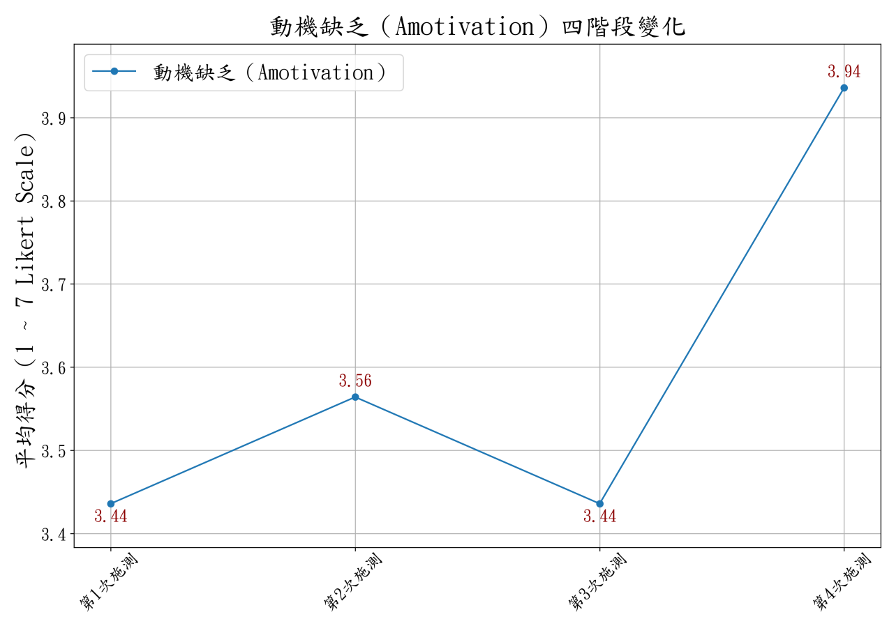

AI Agent賦能「教與學」
新教學設計的實踐與反思
從一門課的 AI 協作，
走向教師主導的 Agent
Agent 為下一步構想，尚待驗證

- 01要解決的問題
- 02教學與資料蒐集
- 03資料分析
- 04反思與下一步
AI Agent 賦能「教與學」
本頁要回答：今天要分享什麼？
講解脈絡：題目 → 四段路線。
建議時間：約 1 分鐘
口語講稿摘要
各位老師好，我是電子工程系的楊榮林。謝謝教務處的邀請。今天的內容以 113 年度教學實踐研究計畫的成果報告為主，場域是《數位系統設計實務》。
不教 Verilog 的老師不用擔心，可以把它想成一門學生要同時學概念、做出作品、再自己驗證的課。今天分四段：做了什麼、為什麼做、怎麼做，最後是做完之後的反思。題目上的 AI Agent，放在反思的最後，當作下一步來談。
來源
來源：行事曆紀錄（2026-11-11 16:40–17:40，建議分享約 40 分鐘）；113 成果報告封面（計畫編號、名稱、學門）。
113 年度教育部教學實踐研究計畫
生成式 AI 如何改寫教育場景：適性化學習的實驗探索
How Generative AI Rewrites the Educational Landscape: An Experimental Exploration of Adaptive Learning
摘要大綱
- 場域
大一《數位系統設計實務》：布林邏輯、Verilog HDL、模組化設計、RTL 合成到微處理器專題
- 設計
依學習進程分四個教學階段；導入 LLM Coding、Vibe Coding，學生依能力自選，實現差異化學習
- 評量
多層次評量：形成性選擇題、自動批閱 Verilog、Toy-Processor 鷹架檢核；四輪 SIMS 追蹤動機
- 報告結論
降低學習門檻、提升專題完成率、促進內在動機；Vibe Coding 為基礎較弱者提供補救途徑
結論為報告原文；本場以單組追蹤保守解讀

生成式 AI 如何改寫教育場景：適性化學習的實驗探索
本頁要回答：今天談的 113 計畫，正式名稱是什麼？摘要怎麼說？
講解脈絡：計畫名稱 → 四階段階梯 → 兩種 AI 協作自選 → 多層次評量與四輪 SIMS → 報告結論與今天的解讀界線。
建議時間：約 0.75 分鐘
口語講稿摘要
這是今天要談的計畫：113 年度教學實踐研究計畫「生成式 AI 如何改寫教育場景：適性化學習的實驗探索」，工程學門，場域是大一的《數位系統設計實務》。
右邊這張圖就是摘要：課程分四個階段往上爬，AI 協作一步一步加深；到專題，學生依能力自選 LLM Coding 或 Vibe Coding。每個階段做一輪情境動機問卷，評量則有選擇題、自動批閱和專題的鷹架檢核。
報告的結論是降低門檻、提升完成率、促進內在動機。摘要的語氣比較肯定；今天我會更保守：這是單組追蹤，只描述變化，不直接歸因於 AI。
來源
來源：113 成果報告封面（2025-08-26 繳交，計畫編號、名稱、學門、執行期間）；成果報告中文摘要（references/teaching-practice-113/02-report/abstract-tw.docx）；四階段名稱依成果報告第 7 頁與 SIMS 分析段落。大綱與圖為本次整理，摘要原文收在「看摘要原文」。
課堂現場：「雙低」成了日常
低學習成就在先，低學習動機隨後；兩者互相拖累
低成就：系統造成的少子化下學生往高處流，私校收到低成就學生是必然
低動機：長年累積的一路被低成就打擊，動機本來就不容易高
我的看法「雙低」並非學生本身的問題，不該怪學生
這門課同時要會邏輯思維、HDL 語法、模組設計與系統整合
先把問題寫到這一門課，後面的設計才接得上

課堂現場：「雙低」成了日常
本頁要回答：雙低從哪裡來？為什麼不該怪學生？
講解脈絡：低成就是系統造成 → 低動機是長年累積 → 不怪學生 → 落到這門課。
建議時間：約 1.5 分鐘
口語講稿摘要
「雙低」是低學習動機、低學習成就，在我的課堂是日常。先講低成就：這是系統造成的。少子化之後，學生當然往高處流，「國立」兩個字本來就是家長和學生趨之若鶩的目標，私校收到低學習成就的學生是必然。我們不應該怪學生。
低動機又從哪裡來？很可能是過去的學習歷程裡，長年被低學習成就影響，動機本來就不高；又沒有人引導改變學習習慣，成就當然不容易好，兩者互相拖累。
這門課學生要同時掌握邏輯思維、硬體描述語言的語法，還要做模組設計和系統整合。基礎或動機不夠的學生，常常一開始就卡住。
來源
來源：113 計畫書第 7 頁；113 成果報告第 2 頁（雙低、課程任務挑戰）。少子化、學生往國立流動的成因，為講者觀點。
有了 AI，動機有機會拉動成就
成就看得見、容易成為 KPI；動機難量化，過去常被放在後面
過去的困境拉高動機，成就未必跟上：還卡在資質與基礎
有了 AI 之後願意動手、動嘴、去做，AI 補上地基，也能高品質產出
前提學生得先有動機，所以要靠課堂活動與設計把動機拉起來
AI 賦能帶給老師的契機：先拉動機，成就有機會跟上

有了 AI，動機有機會拉動成就
本頁要回答：為什麼這次要先從動機下手？
講解脈絡：KPI 只看成就 → 過去動機拉不動成就 → AI 補地基 → 動機有機會拉動成就。
建議時間：約 1.5 分鐘
口語講稿摘要
過去不管是教學或其他情境，學生進到一個系統，我們想拉高的是學習成就，不太在意學習動機。因為動機沒辦法清楚量化、被外界看到，不容易成為 KPI；成績變好、參加比賽、拿了多少張證照，這些都能明確代表成就。這就是我們的困境。
而且過去就算提高了學生的動機，也不一定能反映到成就上，因為成就還受限於學生本身的資質和過去的基礎背景，這些不是短時間能改變的。
有了 AI 參與之後，至少我個人看到一條不同的路徑。如果我們透過課堂活動和設計提升學生的動機，再加上 AI 輔助：不管他過去是自己躺平，還是長期被成就壓力壓到躺平，只要他現在有動機、願意動手、願意動嘴、願意去做，AI 可以在某種程度上彌補過去地基不穩的代價，他也能產出高品質的成果。
這時候，引起動機就有機會拉動成就的提升。這是 AI 賦能帶給老師們的契機。接下來的課程設計，就是從這裡出發。
來源
來源：講者觀點（2026-11-11 補充）。這是設計的出發點，不是 113 報告的結論；動機與成就的實際變化，請以後面的 SIMS 與學生自評資料為準。
平均沒有明顯變，標準差卻多了三成
109 → 111 學年：平均相近，分數卻散得更開（示意）

平均看不出來的警訊：前段、後段都離平均更遠
平均沒有明顯變，標準差卻多了三成
本頁要回答：為什麼把「落差」當成問題？
講解脈絡：平均相近 → 分布拉開 → 測驗分得出落差 → 警訊。
建議時間：約 1.5 分鐘
口語講稿摘要
這是計畫書裡的前期資料。109 到 111 學年，這個專班的學期成績平均沒有統計上的顯著改變，標準差卻從十點九五增加到十四點六五，多了三點七分，將近百分之三十四。
這張圖不是學生真正的成績分布，只是示意：兩組平均差不多，但一組的分數明顯散得更開，前段和後段都離平均更遠。
我設計的測驗和考試方式，基本上能有效甄別、偵測學生之間的落差；也正因為這樣，我看到一個讓我很擔心的現狀：平均看起來沒什麼差，標準差卻很大。這是一個很大的警訊。這是前期資料，班級和 113 不同，我不直接拿來比較。
來源
來源：113 計畫書第 16–17 頁（109–111 學年 NEEMEC 專班；10.95、14.65、將近 34%）。曲線依兩個標準差繪製，平均位置為示意；不是實際成績分布。
落差拉開之後：把 AI 加進教與學
沒有一定能補上標準差的方法，但至少可以試試 AI 賦能
教：老師的心力AI 分擔一些工作，心力留給過去顧不到的前段與後段
學：學生的自學設計 AI 協助機制，讓學生更順利地進入自學迴圈
不保證這是嘗試的方向，有沒有縮小落差，要看後面的資料
一個警訊，兩條回應：教與學都放進 AI

落差拉開之後：把 AI 加進教與學
本頁要回答：看到這個警訊之後，打算怎麼做？
講解脈絡：不知道哪個方法一定有效 → 先試 AI 賦能 → 教 → 學。
建議時間：約 1 分鐘
口語講稿摘要
看到這個警訊，我們希望後續引入 AI，能找到一套方法。老實說，我們也不知道什麼方法一定能彌補這個標準差，但至少想嘗試 AI 賦能，把 AI 加到教與學裡面。
教的部分：AI 分擔一部分工作，我就有比較多的心力，去協助過去沒辦法協助的族群，不管是前段還是後段的學生。
學的部分：我們也可以幫學生設計一套 AI 協助機制，讓他們在自學的過程更順利，更容易進入自學迴圈。
來源
來源：講者觀點（2026-11-11 補充）；方向與 113 計畫書第 7–8 頁「照顧不到每一位學生的遺憾」一致。實際成效請以後面的資料為準。
期待 AI 分擔：整學期的課都遊刃有餘
用 AI 分擔教師的負擔，讓老師的想法擴散得更遠
教：工作自動化教材設計、形成性評量批改、練習自動批閱
學：自問自學用 AI 建構類似個別指導、能自問自學的情境
目標不只實驗班，這學期每一門課都照顧得到
第三個要解決的問題：用 AI 分擔老師的負擔

期待 AI 分擔：整學期的課都遊刃有餘
本頁要回答：當時期待 AI 改變什麼？
講解脈絡：教的自動化 → 學的自問自學 → 整學期的課都照顧得到。
建議時間：約 1 分鐘
口語講稿摘要
有了 AI 這樣的工具，我希望教材的設計、課堂形成性評量測驗的批改，甚至學生練習的批閱，都能更自動化。
同時，也希望利用 AI 幫我建構一個學生可以自問自學、類似個別指導的學習情境。
這些都是我當時感受到、可能因為生成式人工智慧的賦能而改變的地方。這也是這次想解決的第三個問題：用 AI 分擔教師的負擔，讓老師的想法擴散得更遠一點，甚至讓整個學期自己的每一門課都能遊刃有餘。
來源
來源：講者觀點（2026-11-11 補充）；與 113 計畫書第 7–8 頁「教師負荷」及研究問題一一致。負擔是否真的減輕，後面的反思會談：需要先記工時才能下結論。
前一年的小試驗：讓 AI 成為專題組員
112 學年的小試驗，成為 113 計畫的起點

113 不是憑空開始，前一年的小試驗先給了方向
前一年的小試驗：讓 AI 成為專題組員
本頁要回答：113 是憑空開始的嗎？
講解脈絡：112 試驗 → 有限的成果 → 方向。
建議時間：一句帶過
口語講稿摘要
113 不是憑空開始。112 學年我臨時推出「讓 AI 成為專題組員」，連同助教共有三組學生完成整個專題。人數低於期望，計畫書也照寫；但它讓我看到，有 AI 協助，學習成就的累積不再遙不可及。
來源
來源：113 計畫書第 7 頁（112 學年「數位系統設計實務」）。
圖解前的補充細節
112 學年，把期末專題改得更難，而不是更簡單 原本 精簡版 SPI 全班都選實作考試 調整 完整 SPI 介面 要與 Arduino UNO 互傳資料 結果 三組完成 連同助教共三組；低於期望 我學到 「藉由 AI 的協助提高專題完成率」，但專業素養不會因此短期大幅提升
原本怎麼排，實際怎麼改
113 申請時的授課計畫，與成果報告的實際執行對照

規劃會變；改了什麼、為什麼改，都要留下紀錄
原本怎麼排，實際怎麼改
本頁要回答：規劃和實際差在哪裡？
講解脈絡：左右對照 → 只講文件有寫的理由。
建議時間：約 1 分鐘
口語講稿摘要
計畫書是三階段，期末安排乘法器和 SPI。實際執行變成四階段，中段加入 AI 協作，那兩個專題移到學期中，期末改做一顆簡易處理器，後來又多了補救的選項。
規劃一定會變。我的原則是：改了什麼要留下紀錄，文件沒有寫明的原因，我不替它補一個好聽的故事。
來源
來源：113 授課計畫書 PDF 第 1–3 頁；113 計畫書第 12、14–15 頁；113 成果報告第 6–10 頁。
四階段教學：基礎、協作，再到自主選擇
課程長度 18 週；不是第一週就把 AI 全部打開

AI 的角色要隨任務改變，支援與評量也要一起調整
四階段教學：基礎、協作，再到自主選擇
本頁要回答：AI 是怎麼一步步放進來的？
講解脈絡：四階段依序 → SIMS 時間點。
建議時間：約 1.25 分鐘
口語講稿摘要
第一階段不用 AI，先打基礎。第二階段開放學生自己決定要不要問 AI。第三階段做兩個小專題，正式用 LLM Coding，學生主導、AI 輔助。第四階段是整合專題，做法讓學生自己選。
動機量表 SIMS 也跟著階段測四次，所以後面的曲線有四個點。不過報告兩個章節對第一次的施測時間寫法不一致，實際日期我還要回原始紀錄確認。其他學科可以借的是這個想法：先有基礎，再放工具，而不是第一週就全開。
來源
來源：113 成果報告 4.1（第 6–8 頁）、6.1（第 12–14 頁）：四階段名稱、多重表徵、Zuvio、HDLBits 71 題、25 題自動批閱、Shift-and-Add 乘法器與 SPI、Toy-Processor 二十條指令與十二組測試、各次 SIMS 施測時點；成果交流會簡報第 3 頁。卡片文字是講師的濃縮。資訊圖依本頁內容整理，為概念示意。
圖解前的補充細節
《數位系統設計實務》18 週：AI 從第二階段才放進來，一步一步加重 階段一 基礎複習 Verilog 入門 AI 尚未使用 AI 多重表徵、Zuvio 即時測驗 SIMS ① 課程開始 階段二 模組化設計 有限狀態機 AI 自由選用：問提示、除錯 HDLBits 指定 71 題、批閱 25 題 SIMS ② 階段結束 階段三 可合成 RTL 兩個小專題 AI LLM Coding 正式實施 乘法器、SPI 傳輸模組 SIMS ③ 階段結束 階段四 整合專題 Toy-Processor AI 三種做法自己選 20 條指令、12 組自動測試 SIMS ④ 專題結束
修訂讀圖提示：首次 SIMS 時點在報告 5.2 與 6.1 寫法不同，須回原始施測紀錄核對。
同一個專題，三條自選路徑
學生選的是完成任務的方式；報告沒有三組成效比較

作品完成、理解程度與 AI 使用方式，需要分開驗收
同一個專題，三條自選路徑
本頁要回答：同一個專題，怎麼照顧不同學生？
講解脈絡：三條路 → 誰走哪條。
建議時間：約 1.25 分鐘
口語講稿摘要
期末專題是一顆二十條指令的處理器，有十二組自動測試。學生有三條路。LLM Coding 是學生主導，請 AI 生成模組，自己整合測試，報告寫多數高完成度的學生選這條。Vibe Coding 門檻較低，在 AI 引導下完成核心設計，許多學生因此做完。全手作不用 AI，時限內沒有人做完，這點也照實寫。
至於走 Vibe Coding 的學生學到的是否一樣，這輪資料回答不了。這個問題到了 Agent 時代只會更尖銳。
來源
來源：113 成果報告 4.1 第四階段（第 8 頁）、4.2（第 9 頁：三種模式與 Vibe 的說明）、4.3（第 9–10 頁：補救選項、40 題、擇優計分）、6.1（第 13–14 頁：LLM 多數高完成度、Vibe 許多學生完成、全手作無人完成）；成果交流會簡報第 4 頁（「未完成實作學生可選擇專題補救觀念測驗替代」）。
圖解前的補充細節
期末專題 P306 Toy-Processor：同一個題目，學生自己選做法 LLM Coding 學生主導 AI 生成模組，學生整合測試 ✓ 多數高完成度者選這條 Vibe Coding 門檻較低 AI 引導完成核心設計 ✓ 許多學生順利完成 全手作 不用 AI 保留給想自我挑戰的學生 ✕ 時限內無人做完 原計畫沒有 做不完的學生，期末加開「專題補救觀念測驗」40 題，擇優計分
修訂讀圖提示：路徑與結果依報告描述；做不完者另可選補救觀念測驗。
「活」教材：從卡關訊號，到下一輪更新
過去 02、03 是同一步，老師自己補寫；現在 AI 補強，老師驗證

多了一步，但不是老師動手：更新更輕鬆、更快
「活」教材：從卡關訊號，到下一輪更新
本頁要回答：AI 加進來之後，教材更新的迴圈哪裡變了？
講解脈絡：過去的複習翻轉 → 02、03 原本是老師一個人的一步 → 現在 AI 補強、老師驗證 → 多一步卻更輕鬆。
建議時間：約 1.5 分鐘
口語講稿摘要
在 AI 協助設計教材之前，圖上的第二步和第三步其實是同一步，由老師自己在課後重新修訂、補充教材。這就是我當時的研究「複習翻轉」：上完課之後，根據學生在課堂上的反應與表現、形成性評量的結果、助教的回饋，還有我自己的觀察，再回頭補充、修改教材。所以那時候我們就把教材叫做「活」的教材，因為它會隨著上課的狀況再進化。
後來我們找到 Notion 這樣的工具，筆記一改，線上的教材就跟著改。流程雖然已經比早期簡單、方便很多，但老師在這個迴圈裡要付出的時間和心理負擔，依然非常沉重。
這次把 AI 加進來，就變成第二、第三兩步：把觀察到的課堂情境訊息和現有教材交給 AI，讓它做補強；老師負責最後的驗證和細節修正。看起來多了一個步驟，但多出來的這一步不是老師自己動手，而是 AI 協助。所以一份活教材的更新，變得輕鬆很多、快很多，尤其不用再花大把時間處理格式上的細微調整，這些對 AI 來說都非常簡單。
學生偏好調查裡，線上數位教材最高，77.8%，第二是 Zuvio 形成性評量 75.6%。不過偏好不是成效。
來源
來源：113 計畫書第 8、15 頁；113 成果報告第 6、8、12、19 頁；115 計畫書第 3 頁（「單一學期便累積超過四十筆」）；偏好比例見 113 成果報告圖四（第 18 頁）與 6.5（第 19 頁）。過去複習翻轉流程與「更輕鬆、更快」的感受，為講者經驗（2026-11-11 補充）；未記錄工時，不宣稱節省多少時間。
即時回饋：不用等老師改，像在打電玩
兩種批閱的共同點：交了馬上知道對不對，修正再試

即時回饋提供再試的機會；省下多少工時，這輪尚未量化
即時回饋：不用等老師改，像在打電玩
本頁要回答：自動批閱為什麼對自主學習有幫助？
講解脈絡：提交 → 比對 → 回饋 → 修正再試；不用等人改。
建議時間：約 1 分鐘
口語講稿摘要
不管是現成的 HDLBits，還是我們自己設計的系統，自動批閱對學生的自主學習，都形成了一個很有幫助的學習迴圈。因為不需要等老師或助教去改，學生馬上就知道自己做的東西對不對。這種感覺很像在打電玩：失敗了，馬上再試一次。
HDLBits 指定 71 題，全班平均完成 62 題；期末偏好調查也有 62.2% 的學生把自動批閱選為喜愛的教學方法。不過要提醒：偏好和功能測試通過，都不能代替理解的測量；省下多少老師工時，這一輪也還沒量化。
來源
來源：113 成果報告 5.2（第 11 頁）、6.1（第 13 頁）、6.5（第 19 頁）。「像打電玩」為講者比喻（2026-11-11 補充）。流程圖為概念示意，卡片尺寸不表示題數比例。
兩種自動批閱：課後練量，課堂驗證
現成平台給學生自主練習；自建系統在課堂確認是不是真的學會

用途不同，分開解讀：一個看練了多少，一個看會不會
兩種自動批閱：課後練量，課堂驗證
本頁要回答：為什麼要兩種自動批閱？各看什麼？
講解脈絡：HDLBits 是什麼 → 為什麼只記題數 → 自建 Docker 系統在課堂受控施測。
建議時間：約 1.5 分鐘
口語講稿摘要
我們用了自動批閱，而且是自己設計、改進過的，有兩種比對機制。第一種是線上現成的 HDLBits，一般人說工程師面試前刷題用的網站。裡面有很完整的入門、基礎數位邏輯 Verilog 設計題目，學生給出答案，它就自動合成、模擬、批閱對錯，有點像在玩線上遊戲。
但這個工具已經存在一段時間，我們也用了兩三年，網路上、GitHub 上其實找得到答案。所以它比較像是提供學生一個自主練習的管道，我們引導他自己去練，只收集、記錄學生練了幾題。平台超過百題，我們要求完成一部分單元，大約 71 題；報告記錄多數學生都超過要求，最高做到 181 題。
第二種，為了更明確地偵測學生是不是真的學會，我們自己設計了一套自動批閱工具，用 Docker 環境，讓學生在課堂上直接做測驗，而不是回家做。在受管控的情境下現場完成，涵蓋平時 25 題、期中 4 題、期末 12 組功能測試。
來源
來源：113 成果報告 5.2（第 11 頁：HDLBits 衡量練習強度、自建系統 25／4／12）、6.1（第 13 頁：指定 71 題、最高 181 題）。Docker 環境、課堂受控施測、網路上有答案所以只記錄題數，為講者經驗（2026-11-11 補充）。
有人做不完，保留一條回到概念的路
期末發現 RTL 設計與驗證卡關，臨時新增補救選項

把調整的時機、理由與內容寫清楚，保留下一輪改課的依據
有人做不完，保留一條回到概念的路
本頁要回答：有人做不完專題怎麼辦？
講解脈絡：發現 → 臨時加開 → 留紀錄。
建議時間：一句帶過
口語講稿摘要
專題做到期末，我發現有些學生確定做不完。為了不讓他們在終點前放棄，臨時新增補救觀念測驗：讀規格書、看影片，用四十題選擇題檢查對處理器架構的理解，與專題擇優計分。原計畫沒有這條路，也沒有資料能驗證效果，但時機和理由都留了紀錄。
來源
來源：113 成果報告 4.3（第 9–10 頁）。
圖解前的補充細節
期末發現有些學生怎麼樣都做不完，臨時加了一條路 看到 專題遇到瓶頸 部分學生難以完成 RTL 設計與驗證 加開 觀念測驗 40 題 讀規格書和影片，選擇題測理解 計分 與專題擇優 避免學生在終點前放棄 照實寫 「此替代路徑雖非原計畫所設」；效果沒有前後比較數據
修訂讀圖提示：補救路徑非原計畫內容；報告沒有前後比較可驗證其效果。
同一班追蹤四次，能描述什麼？
自然班級的單組重複測量設計

教學做法可以分享；成效的解釋要守住研究設計的界線
同一班追蹤四次，能描述什麼？
本頁要回答：證據怎麼收？能說到多肯定？
講解脈絡：單組重複測量 → 換到的 → 付出的。
建議時間：一句帶過
口語講稿摘要
我用單組重複測量，同一班追蹤四次。這在自然班級可行，也保留了真實性。代價是沒有對照組，變化可能來自 AI，也可能來自任務難度或學期末。
人數也要分清楚：51 人實際參與、45 人填期末自評、41 人完成四輪量表、ANOVA 的有效樣本是 39 人。後面每個數字，我都會標它算的是誰。
來源
來源：113 成果報告 5.1（第 10 頁）。「付出的」是講師的檢討。
圖解前的補充細節
「更適用於教育現場無法拆分的自然班級」 換到的 真實性 保留真實班級 可行性 同一班追蹤四次 付出的 因果 沒有對照組 解釋 其他因素難排除
修訂讀圖提示：四輪主樣本 41 人；ANOVA 為 39 人；報告未說明兩者差異的完整原因。
情境動機量表（SIMS）
16 題、四種動機｜每構面 4 題・7 點作答

分開看四種動機，才看得到正向和負向同時發生
量表出處 Guay, F., Vallerand, R. J., & Blanchard, C. (2000). On the assessment of situational intrinsic and extrinsic motivation: The Situational Motivation Scale (SIMS). Motivation and Emotion, 24(3), 175–213. https://doi.org/10.1023/A:1005614228250
情境動機量表（SIMS）
本頁要回答：SIMS 量的是什麼？
講解脈絡：四種動機 → 為什麼要分開看。
建議時間：一句帶過
口語講稿摘要
SIMS 中文稱為「情境動機量表」，有 16 題，分成四種動機：內在動機是覺得有趣，認同調節是覺得有價值，外在調節是因為必須，動機缺乏是不知道為什麼要來。每種四題、七點量表。
把四種分開看，才看得到好消息和警訊同時出現。這是 113 的設計裡，我最推薦各位借用的一件事。
來源
來源：Guay, Vallerand & Blanchard（2000）；南臺版中文題目（素材 TPR參考資料／03_評量工具）；113 成果報告 3.3（第 6 頁）、5.2（第 10 頁）。
動機曲線一：前三種構面，第 3 次最低

文字要和圖對得上：不能只比起點和終點

動機曲線一：前三種構面，第 3 次最低
本頁要回答：四次量測，正向動機怎麼走？
講解脈絡：整體向上 → 第 3 次低點。
建議時間：一句帶過
口語講稿摘要
先看圖一的前三種動機構面，第 3 次出現低點，第 4 次回升；外在調節代表外在要求，不等於自主動機或好效果。這個階段恰逢 RTL 任務，但曲線不能證明是任務難度或 AI 造成變化。所以報告寫「穩定上升」並不準確，等一下我會回頭改這句。
串場：正向動機第 3 次最低、第 4 次最高——看起來是好消息。
來源
來源：成果交流會簡報第 8 頁正向構面圖（原圖未改）；113 成果報告 6.2（第 14 頁）與圖一（第 15 頁）。右側資訊圖的形狀為示意，數值以左圖為準。
動機曲線二：動機缺乏，第 4 次也升高

只挑正向的圖，就會錯過這一條線

動機曲線二：動機缺乏，第 4 次也升高
本頁要回答：動機缺乏怎麼走？
講解脈絡：第 4 次也升高。
建議時間：一句帶過
口語講稿摘要
再看動機缺乏。第四次，也就是做完處理器專題之後，它也升高。正向動機和動機缺乏在同一個時間點一起往上，這是這份資料最重要的訊號。
串場：但同一時間，動機缺乏也升高。只看正向那張圖，就會錯過這條線。
來源
來源：成果交流會簡報第 8 頁動機缺乏圖（原圖未改）；113 成果報告 6.2（第 14 頁）與圖二（第 15 頁）。3.44、3.56、3.44、3.94 為圖上標示。
配對檢定：提升是顯著的，動機缺乏也是
同一批 41 位學生，第 3 次 → 第 4 次配對 t 檢定：平均的提升不是偶然
顯著提升的好消息
內在動機5.23 → 5.74p = .001・d = 0.55
認同調節5.38 → 5.82p = .001・d = 0.53
也顯著升高的警訊
動機缺乏3.41 → 3.94p = .002・d = 0.51
特別之處正向明確提升時，動機缺乏通常不顯著；這次卻顯著上升講者經驗
好消息確認是顯著的；動機缺乏也顯著升高，下一頁看為什麼

統計結果：好消息和警訊都要寫
本頁要回答：第 3 到第 4 次發生了什麼？
講解脈絡：好消息 → 警訊 → 相對自主指數。
建議時間：約 2 分鐘
口語講稿摘要
前面兩張是敘述統計；這一頁是推論統計。同一批 41 位學生，第 3 次到第 4 次做配對 t 檢定。
先講好消息：內在動機從 5.23 升到 5.74，認同調節從 5.38 升到 5.82，p 值都是 .001，效果量都在 0.5 以上。也就是說，平均上看到的提升不是偶然：學生不論是覺得有趣，還是覺得有價值，都有明確的提升。
但有一個很特別的現象：動機缺乏也顯著升高，3.41 到 3.94，p = .002。以我的經驗，正向動機有明確提升時，動機缺乏通常不太會出現顯著變化，不論升或降；這一次卻是顯著上升。要怎麼理解，下一頁從標準差來看。
串場：這不矛盾：四種動機是分開量的。同一步，好消息和警訊都是中等效果量。
來源
來源：成果交流會簡報第 9–10 頁兩張表；113 成果報告 6.3（第 15–16 頁）與 6.4（第 17 頁：標準差 1.07 → 1.43、變異幅度 33.1%）。標準差寫 1.08 是 1.075 四捨五入，全稿統一。資訊圖依本頁內容整理，為概念示意。
動機缺乏：平均往上，學生之間也拉開

正向是整隊往前；動機缺乏是往上也拉開，要看逐人資料才知道誰掉隊

動機缺乏的分散，增加最明顯
本頁要回答：分數分散代表什麼？
講解脈絡：紅色長條 → 隊伍比喻：整隊往前 vs. 隊伍拉長 → 示意的界線 → 逐人資料。
建議時間：約 1 分鐘
口語講稿摘要
上一頁是平均；這一頁看分散，也就是標準差。可以把全班想成一支隊伍。
內在動機和認同調節：平均往前，標準差幾乎沒變（−5.1%、+2.1%）。整支隊伍一起往前走，隊形沒有散開；大家的感受是一致地變好。
動機缺乏不一樣：平均往上，標準差從 1.08 增加到 1.43，多了約 33%。隊伍被拉長了——有人幾乎沒變，有人升得很多。所以動機缺乏的顯著上升，比較可能是一部分學生升高所帶動，而不是全班一起變得沒動機；這也呼應前面「多數人被接住，鷹架還沒接住所有人」。
界線要說清楚：右邊曲線是用平均和標準差畫的常態示意，不是個別學生資料。分散變大，和「一部分人升很多」一致，但要確認是哪些人、是否分成兩群，還要看逐人的前後變化，這是下一輪要補的。
來源
來源：113 成果報告 6.4（第 17–18 頁）與圖三（原圖未改）；表二（第 16 頁）。右側分布圖依表二平均與標準差畫常態曲線，為示意，不代表實際分布或個別學生。
期末自評：一份學生滿意度調查
表三 本課程是否提升你的…（45 人，期末對整學期的自我總評）
作答說明 明確感到提升才選「有」、明確感到無關才選「沒有」；拿不準選「不確定」（學生建議新增的選項）。右側百分比為「有」；格內數字為人數
「有」是明確的肯定：五項都過半；明確說「沒有」的最多 4 人

期末自評：一份學生滿意度調查
本頁要回答：學生對這學期的教學改變滿意嗎？
講解脈絡：這份自評是什麼 → 與成績核對 → 作答規則（有／沒有是強烈表態，不確定是學生建議的緩衝）→ 結論與要改進的地方。
建議時間：約 1 分鐘
口語講稿摘要
這一份是學生在期末，對自己整個學期學習狀況的總評。我們拿它和學生成績對照過：回答「有提升」的，不一定是成績特別好的同學，兩者沒有明確的對應。
所以我把它看成學生對這門課的整體回饋：這一整個學期的課程與教學設計，學生是親身走過的人。我們想知道的是，他們對這次教學實踐帶來的改變，是否感到滿意、有收穫。
填答前我特別跟學生說明：「有」和「沒有」都要用比較強烈的標準來選。你很明確感受到自己這些能力增加了，才選「有」；你很明確覺得這些教學改變跟你的學習沒有關係、完全不受影響，才選「沒有」；如果有疑問、拿不準，就選「不確定」。
「不確定」這個選項其實是學生建議的。早期問卷只有「有」和「沒有」，有學生在質性回饋裡提到，有時候真的沒辦法很強烈地確認，希望多一個選項。加上之後，「有」和「沒有」兩端的訊號更乾淨：中間的「不確定」像一段緩衝，讓兩個明確的表態不會互相干擾。
所以讀這張表：五個面向，明確說「有」的都過半，問題解決 41 人、自主學習 36 人；明確說「沒有」的最多 4 人，在團隊合作。整體來說，學生對這次的改變是滿意的。
學習興趣有 28 人明確說有、15 人不確定。不確定不是否定，但代表還有一群學生沒有明確感受到；對照前面動機缺乏被拉開，這是下一輪要補的地方。這些是感受和滿意度，不是能力測驗。
來源
來源：113 成果報告表三（第 19 頁，已核對原表影像）。長條依人數比例。與成績核對、作答說明與「不確定」選項的由來，為講者補充，未列入成果報告。
同一個專題，兩種感受
課程難度的回饋，報告說「明顯呈現兩極分化」
基礎良好的學生「專題任務極具挑戰性，因此更激發我額外投入 HDL 練習。」
基礎薄弱的學生「每週新知識與專題壓力過大」
學生的期待提供更多中間階段的任務，緩和認知負擔與心理壓力
同一個任務，兩種感受；開放題說出了分數看不到的事

同一個專題，兩種感受
本頁要回答：同一個任務，學生怎麼感受？
講解脈絡：兩句話 → 學生的期待。
建議時間：一句帶過
口語講稿摘要
基礎較好的學生說，專題很有挑戰性，反而讓自己多練。基礎較弱的學生說，每週新知識加專題，壓力太大。這是報告整理的例子，不是全班比例。學生希望多一些中間階段的任務，這是我要接住的回饋。
來源
來源：113 成果報告 6.5（第 19 頁）。資訊圖依本頁內容整理，為概念示意。
下一步：Agent 和聊天差在哪
從這裡開始是延伸構想；老師的工作從逐句提問，移到定目標和驗收
差別不只是更聰明，是交出去的工作變大了，驗收也要跟著變嚴
下一步：Agent 和聊天差在哪
本頁要回答：AI Agent 到底是什麼？
講解脈絡：左：聊天 → 右：目標、循環、驗收。
建議時間：約 1 分鐘
口語講稿摘要
113 用的是聊天式 AI：你問它答，答完自己複製、測試、修改。AI Agent 是給它一個目標，它會規劃步驟、開檔案、寫程式、跑工具，看結果不對再回頭改。
所以老師的工作變了：先講清楚目標、資料範圍和驗收條件，最後看成果和紀錄，再決定要不要用。這也是風險所在：一次交出去的事情越多，沒驗收時出錯的範圍就越大。
來源
來源：114 教學實踐申請書（PEE1141966）PDF 第 3 頁對 AI Agents 的描述。圖為本場工作定義，概念示意。
AI Agent 已實作：從 114-2 延續到 115-1
114-2 已導入教學；本學期 115-1 持續實作，教師保留判斷與驗收

Agent 已進入教學現場；把負荷交出去，把判斷留下來
AI Agent 已實作：從 114-2 延續到 115-1
本頁要回答：AI Agent 何時進入教學？教師還要負責什麼？
講解脈絡：114-2 開始實作 → 115-1 持續實作 → 工作交出去，教師仍驗收。
建議時間：約 1.25 分鐘
口語講稿摘要
前面談的是 113 計畫留下的問題。走到 AI Agent，時間線已經往後推進：我在 114-2 已經把 AI Agent 導入教學，本學期 115-1 也持續實作。這已經是教學現場正在做的事。
這張圖整理教師端三種負荷與工作分配：教材起草、評量與批閱、問卷與進度整理。右欄是教師必須把關的責任：概念與範例、答案與測資、以及如何介入學生學習。
已實作，和已證明省時或提升學習成效，是兩件要分別說明的事。接下來仍要持續記錄工時與教學結果，才能回答效益有多大。
來源與後續紀錄
來源：114-2 已實作、115-1 持續實作，由講者於 2026-11-11 確認。113 計畫書第 13–15 頁與成果報告第 3 頁僅作為教師負荷及工作分配的背景，不是後續學期實施的證據。
後續紀錄：補充各學期實作案例、工時與驗收紀錄，供後續成效評估。